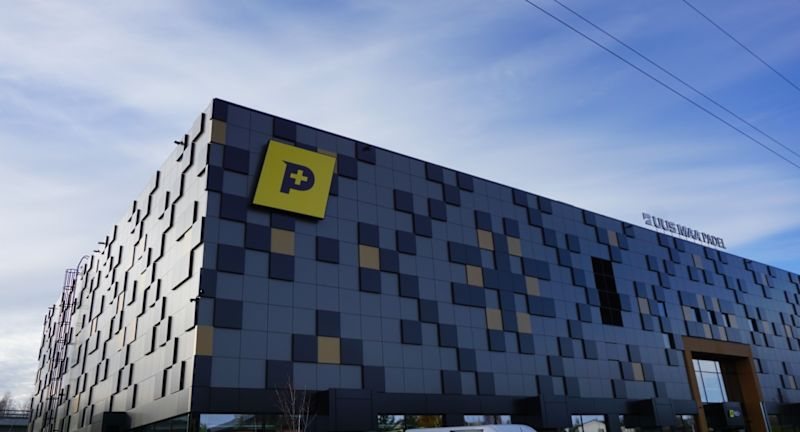
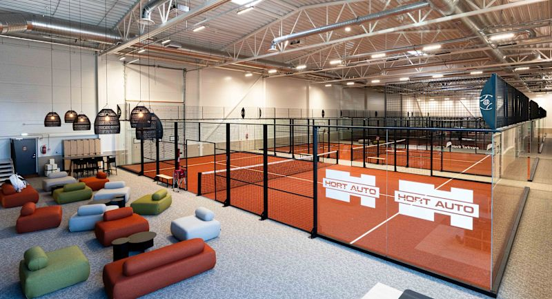
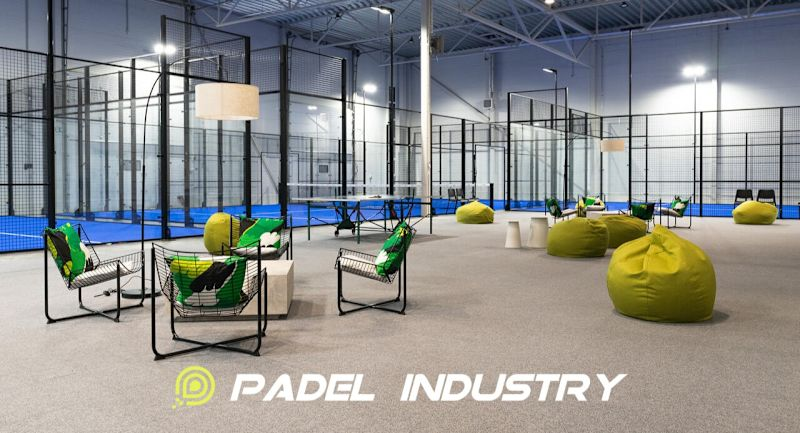
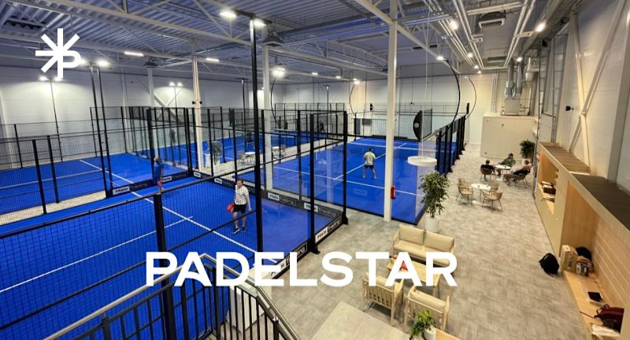
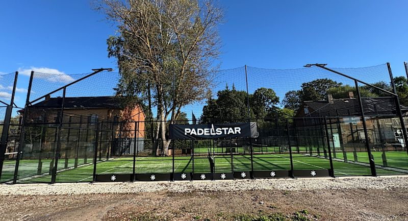
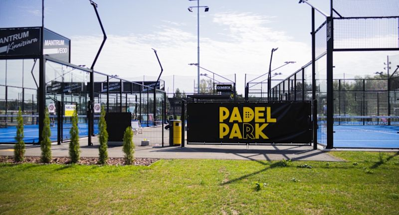

Kus Tartus padelit mängida
Tartus ja selle lähistel on nii sisehalle kui ka väliväljakuid. Talvel saab mängida ainult siseväljakutel, suvel sobivad ka väliväljakud. Kõiki väljakuid saab broneerida Playtomicu kaudu. Kasuta allolevaid nuppe, et näha ainult sise- või väliväljakuid.

Padel+ Uus Maa
Tammetõru 11, Tartu
7 siseväljakut
E-R 08:00-22:30
L-P 09:00-21:00

Padel Industry Ravila
Ravila 59, Tartu
5 siseväljakut
E-P 06:00-00:00
Broneeri Playtomicus
Padel Industry Tõrvandi
Teeninduse tee 7, Tõrvandi
4 siseväljakut
E-P 07:00-23:30
Broneeri Playtomicus
Padelstar Tähe
Tähe põik 12, Soinaste
4 siseväljakut
E-P 06:00-23:30
Broneeri Playtomicus
Padelstar Kroonuaia
Kroonuaia 70, Tartu
4 väliväljakut
E-P 06:00-23:30
Broneeri Playtomicus
Raadi Padel Park
Muuseumi tee 7, Tartu
4 väliväljakut
E-P 05:00-23:30
Broneeri PlaytomicusPadelstar Raadi
Raadikeskus, Keskuse tee 8, Raadi
Avamisel - avatakse 2027
Fotod ja info: Playtomic